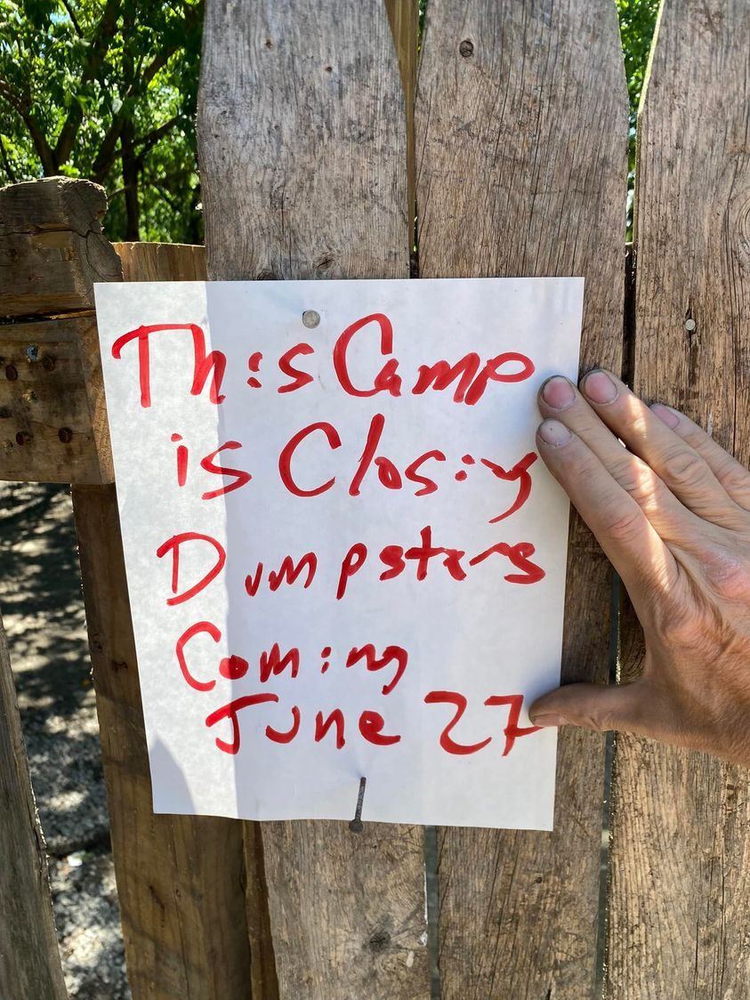

Mobile uploads
After some serious thought and consideration, I have decided to shut our tent city down.
People will have about 10 days to take what they want. And I will be bringing a dumpster on Monday June 27. No one will live outside on our property after that date.
I have determined that these people are not safe from the city at this location.
If you are interested in helping people move please come and make a new friend. It’s incredibly difficult to move when you have no transportation.
This is not the end. Far from it. It’s just a turn of the page.